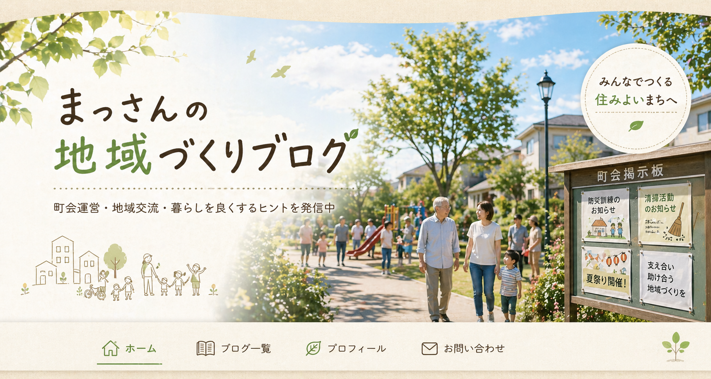
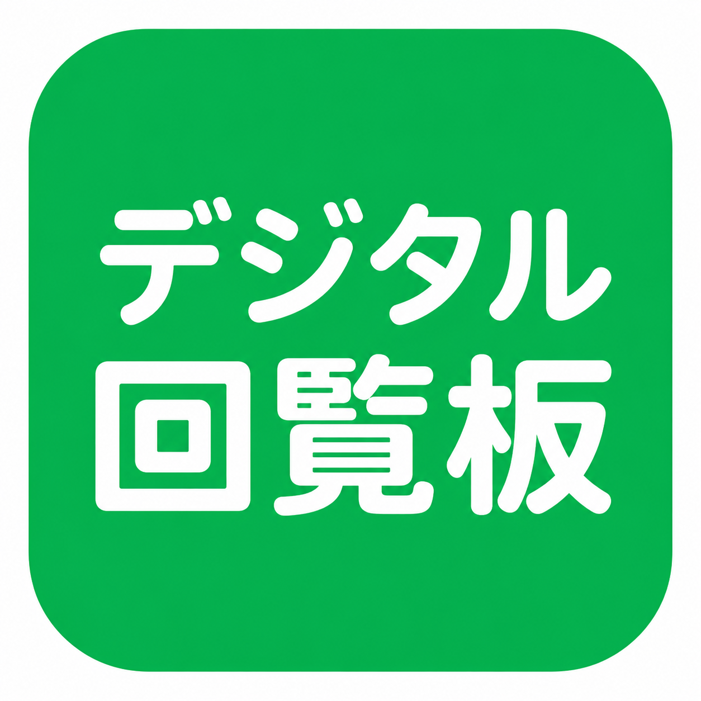

PTA会長の経験から見えた地域の課題。「このままじゃまずい」と感じた理由と、町会長に立候補した思いを語ります。

町会運営令和の時代に紙の回覧板だけでは限界を感じ、LINEオープンチャットを導入した記録です。
新しいことに挑戦するまでのリアルな記録。なぜWordPressでなくGitHubを選んだのか、その理由を書きました。
メールとネット閲覧しかできなかった私が、GitHub PagesとCloudflareで無料ブログを公開するまでの手順を公開します。